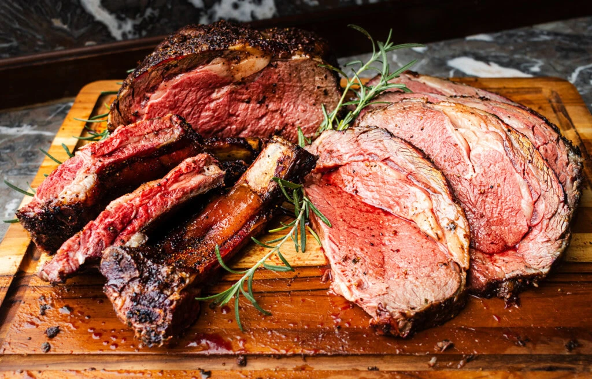

Prime Rib

A great prime rib doesnt require much, a little bit of prep and proper
temp will have your families mouth singing praises for weeks and months to
come!
Ingredients
- Bone in rib roast
- Kosher Salt
- Worcestershire sauce
- cracked black pepper
- softened butter
- chopped rosemary, thyme, and sage
Steps
- Trim- trim off any hanging hard pieces of fat
-
Season the roast- i like to dry brine with kosher salt for a few
hours, i apply a generous amount, and then dunk it in a Worcestershire
bath and wrap it in saran wrap over night
-
finish seasoning- after 24hrs i finish the roast with cracked black
pepper, and mix the chopped greens in with the butter and lather it
all over the meat, this creates a nice coat and will add flavor
-
Fire up the smoker- i like to smoke mine at 225, checking every 30-45
minutes until the roast reaches 122 degrees. i then remove the roast
from the smoker and either broil it at 500 in the oven for 7 minutes,
or place it on a charcoal grill mid flame, rotating the roast until
each side gets those perfect sear marks
- let it sit- i let mine sit for 20 minutes under a foil tent
- serve